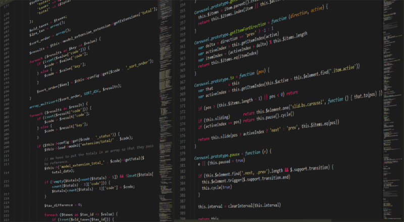
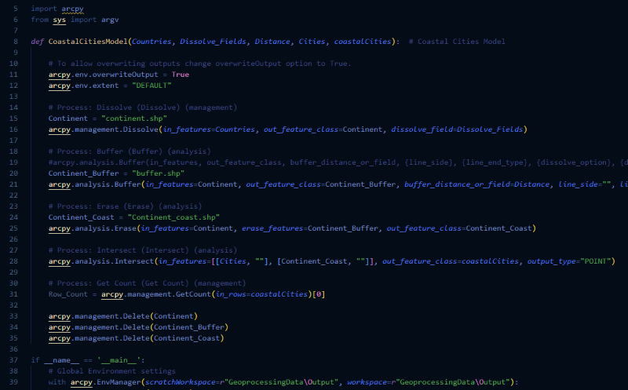
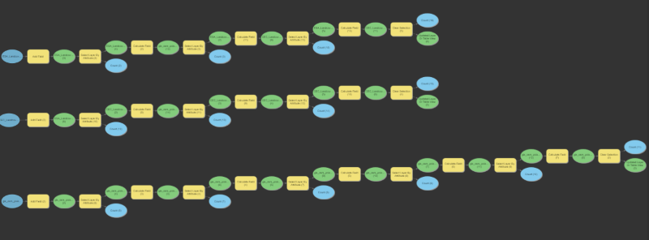

Here is a quote from Richard Stallman:
Programming is not a science. Programming is a craft.
We offer creative solutions to improving efficiency of GIS workflow using various programming languages, such as Python. Today, we see an ever-increasing need for different programs, including GIS analyses, to solve problems or to support decision-making processes. This is why automating workflow becomes ever more important for higher productivity. With our well-designed programs, hundreds of spatial analysis tasks can be done by just a few clicks on a computer.
By automating GIS workflow, not only can we complete repetitive tasks faster, we are also able to complete them without errors. In addition to spatial analyses, we can also automate processes for map producing, for instance, setting up map layout and symbology. We welcome all project proposals from our clients. Even if it is a vague idea, our team is confident in developing it into a sophisticated program according to your needs. If it is a project draft, our team can critically review it and modify for optimal efficiency and effectiveness.
No matter how complex the spatial analysis might seem, our experts always have ways to automate its processes and deliver the best result efficiently. We can do all things: calculating the speed of sound, analyzing shape geometry, conducting wildlife suitability analysis, calculating water budget, formulating aerial survey flight plan, planning trips, processing image, conducting surveys, geocoding using text data, classifying population for dissemination blocks, and even tracking Santa Claus's path!
From command prompt to any integrated development environment, we can perform any GIS workflow anytime, anywhere. This is enabled by making our programs, or specifically scripts, portable.